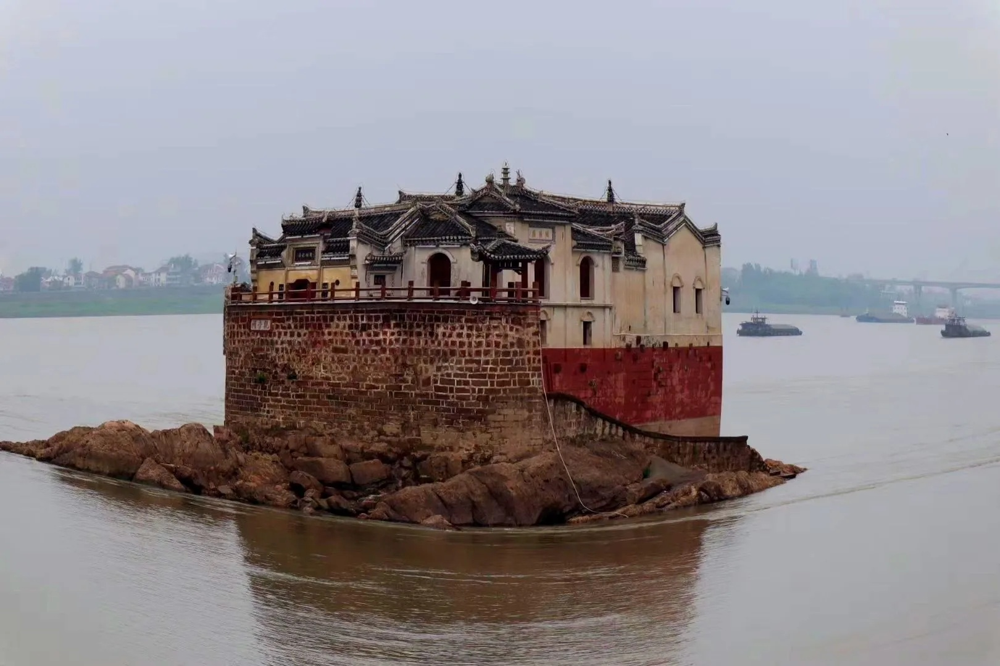
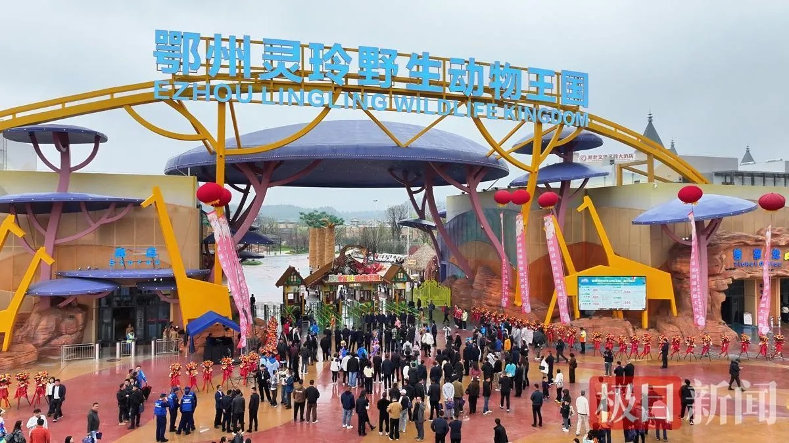

三个非去不可的地方

观音阁
在鄂州城区北面的长江之中，有一座建在巨大礁石"龙蟠矶"上的古阁。 它始建于元代（公元 1280 年），坐东朝西、逆水而立，是典型的江南亭阁式砖木建筑， 至今已有 700 多年历史。
阁长 24 米、宽 10 米、高 14 米，基座厚 1 米余，以长 60 公分、宽 20 公分、高 25 公分的条石垒成， 阁身用青砖砌就。整座楼体与脚下的龙蟠矶融为一体， 由观澜亭、纯阳楼、东方朔殿、观音殿、老君殿等组成，总建筑面积约 300 平方米。
⚠️ 出于文物与人身安全考虑，阁内目前暂不对外开放，可沿江岸观赏。

西山风景区
西山古称樊山，因位于吴王古都武昌（今鄂州）以西而得名，北临长江，与黄州东坡赤壁隔江相望。 景区总面积 167 万平方米，主峰海拔 170 米。
这里是孙权建都与避暑的地方，也是东晋高僧慧远创建古灵泉寺、奠定佛教净土宗发祥地基础的地方。 宋代苏轼多次游历并题写《武昌西山》，如今山上还留有九曲亭、试剑石、松风阁、洗墨池等遗迹。
核心看点：
- 吴王避暑宫——1999 年重建的汉代风格建筑群
- 武昌楼——登高可俯瞰长江与鄂州城景
- 古灵泉寺——千年古刹
- 秀园——精致的江南古典园林，亭台楼阁、小桥流水
梁子湖 · 梁子岛
梁子湖总面积 482.5 平方千米，由 316 个湖汊组成，经长港连通长江， 是武昌鱼的母亲湖，也是一处受到保护的内陆城市型湖泊。 湖域自然景观以"水中含山，山中藏水"为特色。
湖区拥有 105 种鱼类及 137 种鸟类，其中包含 5 种国家一级保护鸟类。 湖中的梁子岛生态旅游区素有"湖中有岛、岛中有湖"的生态奇观， 可乘轮渡上岛，岛上有青石板古街和环岛长廊。
梁子湖度假区位于梁子湖区梧桐湖新区，规划面积 358 平方千米，是国家 4A 级旅游景区， 按"一镇三区多景点"布局建设，是武汉都市圈名副其实的"后花园"。
还可以顺路去看看
除了上面三个，鄂州这几年还新开了不少好玩的地方，周末遛娃、拍照、露营都很合适。

灵玲野生动物王国
近年鄂州文旅的最大"流量担当"。推出"白+黑"全天候游玩体系， 设有埃尔夫仙境两栖爬行馆、毛球儿萌宠主题乐园、勇闯猛兽谷等展区， 还有国际大马戏、主题花车巡游和夜间烟花秀。
鄂州园博园
被称为城市的"绿心"，2025 年 12 月开园，定位是打造"永不落幕"的文旅地标。 园内的鄂州园以园林手法解码"鄂州山水赋"，适合散步、拍照和了解本地植物。
吴王城遗址
位于鄂城区武昌大道南面、江家东巷西侧，东西长 1100 米、南北宽 500 米。 这是孙吴建国时的第一个正式都城，2013 年被核定公布为第七批全国重点文物保护单位。 如今南垣周围被住宅包围，颇有"帝都在市井"的时空错位感。
鄂州博物馆
想系统了解"古铜镜之乡"和吴都文化，这里是最好的起点。 馆内可以近距离看到鄂州出土的历代铜镜等文物。 常见的一日游路线是：鄂州博物馆 → 西山风景区 → 用餐 → 观音阁公园。
峒山旅游景区
位于鄂城区长港镇峒山村，已被列入国家 4A 级景区创建名单。 这里也是中国农民丰收节暨武昌鱼文化旅游节的举办地，乡村气息浓厚，适合体验农事与田园风光。
吴都乔街 · 观音阁公园
吴都乔街是市井烟火气集中的街区，适合边逛边吃； 观音阁公园位于沿江大道，占地 4.6 万平方米，分西、中、东三大景观区， 以观音阁为中心形成景观轴线，充分展现吴都历史文化。
我给你排的两条路线
如果只有一天或两天时间，可以照着走。
吴都文化一日游
- 上午：鄂州博物馆，先看铜镜和吴都文物打底
- 中午：尝一顿非遗武昌鱼（观音阁店或寿昌店）
- 下午：西山风景区，登武昌楼看长江
- 傍晚：观音阁公园，等江面日落和"龙蟠晓渡"
交通：建议自驾，导航搜索相应点位即可。
湖光生态两日游
- Day 1：梁子湖度假区 → 乘轮渡上梁子岛 → 青石板古街 → 湖边看落日 → 住岛上或湖畔民宿
- Day 2：清晨看湖上日出 → 峒山村田园漫步 → 返程顺路去园博园或吴都乔街
季节：秋季最佳，可赶上梁子湖大闸蟹开捕（捕捞季一般持续到 12 月下旬）。